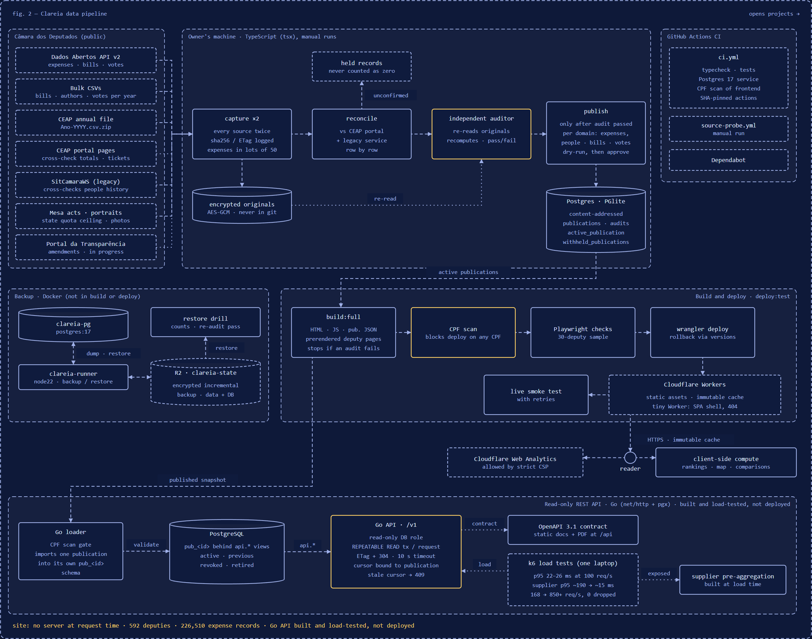
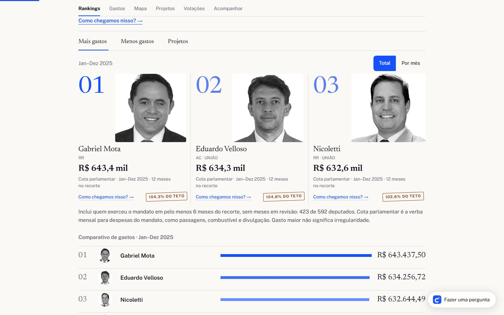
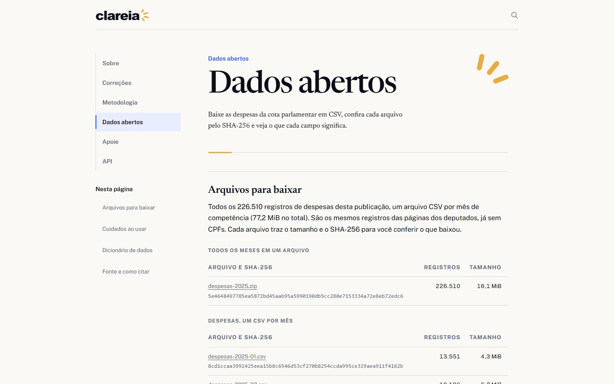

Clareia
A public record of how Brazil's federal deputies spend their parliamentary expense quota (CEAP), built from official Câmara data so that every number on the site can be followed back to the records that make it up.
The problem
The Câmara publishes every quota expense, but in two places that do not always agree: an open-data API and an annual CSV file. Totals on news sites and dashboards rarely say which source they used, which records were included, or what happened to the rows that did not match. A reader who sees "Deputy X spent R$ 600 thousand" has no way to check it.
I wanted a site where the answer to "how did you get this number?" is always one click away, and where missing or conflicting data is shown as missing, never silently turned into zero.
What I built
- Capture twice. The API is read in two passes with different page sizes, and the annual file is downloaded twice, with a SHA-256 and ETag logged for each capture. The originals are kept, encrypted with AES-256-GCM and never committed to Git.
- Reconcile the two sources record by record, by deputy, month, document, category and value. Negative adjustments keep their sign, missing fields stay unknown, and anything ambiguous holds the new publication for review.
- Recompute before release. A second implementation re-reads the preserved originals and compares its totals with the database. A publication can only become active after that check passes.
- Build a static site. The build computes totals by month, category and supplier and refuses to publish if they do not match the records. Pages open with those totals only; a deputy's individual records download when someone opens that list.
- Show the work. Every total has a "Como chegamos nisso?" (how did we get this?) panel that lists the records, the conversion to cents and the sum, with links to the Câmara.
- Separate money from legislative activity. 22.7K bills and 473K roll-call votes have their own collectors and publications and are never related to spending.
System shape
Collection, reconciliation and the audit run on my machine; only audited publications reach the build. The site is static files on Cloudflare Workers, so there is no server, database or queue at request time. The read-only Go API is a separate service over the same published data.

Engineering decisions
- Hold, don't zero. When a deputy has no confirmed term in a month, the month is marked as under review. About 180 deputy-months are held this way instead of appearing as R$ 0, which would understate their spending.
- Precompute, then fetch on demand. Moving aggregates into the build and loading records lazily cut the first load from 174 MB to 6.4 MB (613 requests to 28) and made re-sorting the ranking about 9x faster (1.2 s to 0.13 s).
- Privacy as a deploy gate. Individual suppliers are shown only as "Fornecedor pessoa física". Every build is scanned for CPFs (Brazilian personal IDs) with checksum validation, and the deploy stops on any hit. The deploy tool is pinned and runs with a minimal environment.
- Party at the time of the expense. Deputies switch parties. Party is taken from legislature events for each month of spending, and 35 unclear cases went to manual review.
- A pipeline that checks itself. Each deploy runs build → CPF scan → browser checks → 110 UI checks → deploy → live check. A flaky browser test turned out to be a race with an async download; I proved it by reproducing it against an artificially slow server before fixing it.
- Cache busting. After an iPhone kept serving an old script, every script and stylesheet URL now carries a content hash.

Open data and a read-only API
The open data page publishes all 226,510 records as monthly CSVs and a zip, each with its size and SHA-256, plus a data dictionary and notes on edge cases.
I also built a read-only REST API in Go (net/http and pgx) over PostgreSQL. A loader imports each published snapshot into its own schema behind read-only views, after a CPF scan. The server uses a read-only database role, one REPEATABLE READ READ ONLY transaction per request, a 10 s timeout, ETags with 304 responses, and cursor pagination tied to the publication (a stale cursor returns 409). The contract is OpenAPI 3.1, published as static docs with no JavaScript, so they fit the site's strict Content Security Policy, plus a PDF that CI regenerates and checks against the spec.
Load-tested with k6 on one laptop over loopback: p50 about 5.5 ms and p95 22–26 ms at 100 req/s. The test exposed a supplier endpoint that re-aggregated 123K rows per request; a table pre-aggregated at load time cut its p95 from about 190 ms to about 15 ms and raised the rate held with zero dropped requests from 168 to at least 850 req/s. Run-to-run noise was about ±20%, so these are ranges. The API is not deployed yet, on purpose: it stays off paid hosting until someone needs it.

Findings in the official data
On 18 November a probe found that, since 12 November, the Câmara API returns the net value of ordinary expenses as the negative of the document value, in 2024, 2025 and 2026 samples. The annual CSV is still correct. A rule that takes the CSV value in exactly that case is being written with tests and will be reviewed before the next publication.
Limits I state on the site
- The numbers measure registered quota expenses in 2025, not the total cost or quality of a mandate.
- The second implementation shares methodology rules with the collector. It catches processing errors; it is not an independent review of the rules, and it does not prove the source is complete.
- The search uses local rules over the published records, not an AI model.
What comes next
Ship the CSV rule for the negative net-value bug, show amendments (the collector exists, the pages do not yet), and deploy the API once there is a real consumer.